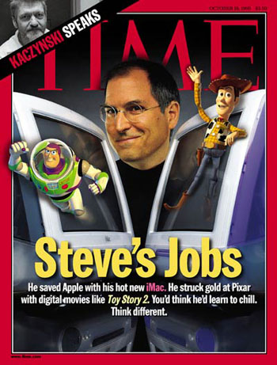
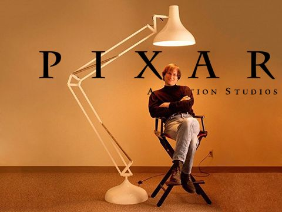

và những cống hiến của ông cho ngành Khoa Học Máy Tính
Giai đoạn 1985-1997
Sau khi rời khỏi Apple, Jobs tạo ra được hai thành tựu nổi bật đáng chú ý sau:
- NEXT Computer
Jobs rời khỏi Apple với 7 triệu dola. Cùng thời điểm đó ông sáng lập công ty NeXT Computer. Cũng như Apple Lisa, máy trạm NeXT ứng dụng công nghệ kĩ thuật cao. Tuy nhiên phần lớn chúng bị ngành công nghiệp đào thải do chi phí cao.
 Hình 6: Jobs và NEXT Computer
Hình 6: Jobs và NEXT Computer
Jobs bày tỏ rằng NeXTcube là một máy tính "tương tác – giao tiếp thông minh", ông tin rằng chiếc máy này là bước tiếp theo sau máy tính "cá nhân". Điều này có nghĩa là, nếu máy tính có thể cho phép con người dễ dàng giao tiếp và cộng tác với nhau, nó sẽ giúp giải quyết nhiều vấn đề mà máy tính "cá nhân" phải đối mặt. Trong thời kỳ mà thư điện tử mà con người gửi cho nhau thường là những đoạn văn bản đơn thuần, Jobs muốn giới thiệu hệ thống thư điện tử của NeXT, với tên gọi NeXTmail, như một ví dụ cho triết lý "tương tác – giao tiếp thông minh" của ông. NeXT mail là một trong những dịch vụ đầu tiên hỗ trợ đồ hoạ và âm thanh tích hợp mà người dùng có thể nhúng vào trong thư điện tử. Jobs điều hành NeXT với một nỗi ám ảnh về việc hoàn thiện thẩm mỹ. Điều này đặt ra căng thẳng đáng kể lên bộ phận phần cứng của NeXT. Trong năm 1993, sau khi chỉ bán bán ra được 50.000 máy, NeXT chuyển hoàn toàn sang phát triển phần mềm với việc phát hành NeXTSTEP.
- Pixar và Disney
Năm 1986, Steve Jobs mua hãng phim đồ họa (sau là Pixar Studios) với giá 10 triệu đô la, trong đó 5 triệu đô la dùng làm vốn cho hãng. Hãng mới, ban đầu đặt tại xưởng Kerner của Lucasfilm tại San Rafael, CalifoLucasfilmrnia; sau này di dời đến E, California. Hãng này theo dự định ban đầu được xây dựng để trở thành một nhà phát triển phần cứng đồ hoạ công nghệ cao. Sau hàng năm buôn bán máy tính Pixar Image không thu về lợi nhuận, hãng đã kí hợp đồng với Disney để sản xuất ra những bộ phim hoạt hình đồ hoạ, trong đó Disney sẽ cộng tác tài chính và phân phối. Bộ phim đầu tiên hợp tác do sản xuất mang tên "Câu chuyện đồ chơi" đã đem lại danh tiếng và sự khen ngợi đối với xưởng phim khi ra mắt vào năm 1995
 Hình 7: Hãng cho ra mắt bộ phim đầu tiên "Toy story"
Hơn 10 năm sau đó, dưới điều hành của giám đốc sáng tạo John Lasseter của Pixar, hãng phim đã cho ra đời những phim hoạt hình nổi tiếng như A Bug’s Life (1998), Câu chuyện đồ chơi 2 (1999), Monsters, Inc. (2001), Đi tìm Nemo (2003), Gia đình siêu nhân (2004), Cars (2006), Chú chuột đầu bếp (2007), WALL-E (2008), Up (2009) và Câu chuyện đồ chơi 3 (2010). Trong số đó, Đi tìm Nemo, Gia đình siêu nhân, Chú chuột đầu bếp, WALL- E, Up và Câu chuyện đồ chơi 3 đều nhận được Giải Oscar dành cho phim hoạt hình hay nhất - giải thưởng được đưa ra vào năm 2001.
 Hình 8: Jobs và Pixar Studios
Ông đổi tên hãng thành Pixar (sau là Pixar Studios). Pixar sản xuất những bộ phim rất thành công biến Jobs trở thành tỷ phú.